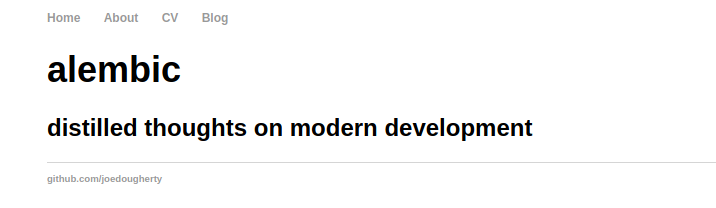
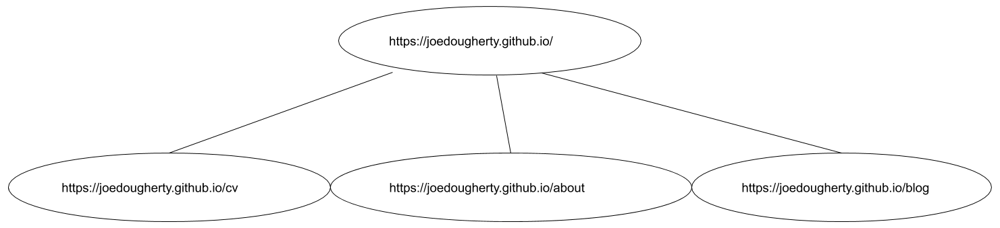

A Practical Application of Breadth-first Search¶
The Motivating Question¶
How can we visit all the interconnected pages on a given site?
Imagine that we are going to visit a site: https://joedougherty.github.io.
Here is a screenshot to demonstrate:
This is a small site with a simple structure. We could click around and visit all its pages manually eventually. But in order to explore a site programmatically, we will want to find and use an appropriate data structure.
One way to model this problem is to consider a website as a kind of graph.
If we think of https://joedougherty.github.io as the root of the graph, we can imagine the other pages as its children nodes.
There are a few ways to traverse graphs. In this case, Breadth-first Search is a natural fit.
According to the Wikipedia page: “It starts at the tree root … and explores all of the neighbor nodes at the present depth prior to moving on to the nodes at the next depth level.”
Looking at the graphical representation above, picture:
starting at https://joedougherty.github.io
visiting https://joedougherty.github.io/cv
visiting https://joedougherty.github.io/about
visiting https://joedougherty.github.io/blog
Understanding the Pseudocode¶
Spider is our crawler class. The crawling process is kicked off with .weave().
Let’s look at an example implementation from Wikipedia and see how Spider implements this algorithm across a few methods that cooperate with one another.
1 procedure BFS(G, root) is
2 let Q be a queue
3 label root as discovered
4 Q.enqueue(root)
5 while Q is not empty do
6 v := Q.dequeue()
7 if v is the goal then
8 return v
9 for all edges from v to w in G.adjacentEdges(v) do
10 if w is not labeled as discovered then
11 label w as discovered
12 w.parent := v
13 Q.enqueue(w)
Breadth-first Search:
A. starts at the root node (lines 3,4)
B. discovers neighboring nodes (lines 9-13)
C. proceeds by visiting them and continuing this process until there are no new nodes left to discover and visit (line 5)
It is important to note that we are not searching for a specific node in this case. We want to visit every possible node. As such, we do not specify a stop condition (as in lines 7-8 above).
Given that there’s no stop condition, we’ll explore the graph until the visit queue is empty.
From Pseudocode to Implementation¶
Let’s look at how the BFS algorithm is implemented in our Spider class.
A: We enqueue the seed_urls specified in the config file. This occurs in the .weave() method.
The first seed_url is the root of the graph.
def weave(self):
for seed_url in self.cfg.seed_urls:
self.visit_queue.append(Link(None, seed_url, None, cfg=self.cfg))
try:
while self.visit_queue:
self.visit(self.visit_queue.popleft())
finally:
self.session.close()
self.cleanup()
self.status_logger.info("Crawling complete.")
Here’s what it looks like when we .visit() a link:
def visit(self, link):
self.pre_visit_hook(link)
self.status_logger.info("Visiting: {}".format(link.href))
self.visited_urls.add(link.href)
resp = self.session.get(link.href)
gathered_links = self.gather_links(resp.content, link.href)
self.status_logger.info("=> Checking {} links...".format(len(gathered_links)))
packaged_links = [(self.session, link) for link in gathered_links]
with concurrent.futures.ThreadPoolExecutor(max_workers=self.max_workers) as exe:
for result in exe.map(check_link, packaged_links):
self._update(result)
A few points worth noting here:
the
.gather_links()method is our implementation of the pseudocode’sG.adjacentEdges(v)The use of
concurrent.futures.ThreadPoolExecutorhere lets us spawn up toself.max_workersto check multiple links at the same time.The
._update()method keeps track of checked links, broken links, and links that threw exceptions. It is also where new pages are added to thevisit_queue.
The iterator returned by exe.map retains the original order of the iterable. If I understand this correctly, the calls to check_link happen concurrently, but the calls to ._update() happen one-by-one after the threads have returned. Since the calls to ._update() are sequential, there is no need to obtain / release locks on the data structures that maintain which links have been visited, are broken, threw exceptions, etc.
B: Discovering the nearest neighbors is achieved with .gather_links():
def gather_links(self, markup, current_url):
gathered_links = list()
for elem in BeautifulSoup(markup, "html.parser").find_all("a"):
try:
href = elem["href"]
except KeyError:
# Skip any <a> tags missing the "href" attribute.
continue
if href != current_url and self.keep_link(href):
gathered_links.append(
Link(current_url, href, elem.text, cfg=self.cfg)
)
return gathered_links
If an element meets these conditions, it is added to the list:
element must have the
hrefattributehrefmust not be the current url (prevent infinite.visit()loops)hrefmust pass.keep_link()(link can’t be broken, a link that threw an exception, or a link that has been visited already):
def keep_link(self, href):
if any(
(
href in self.broken_urls,
href in self.exception_urls,
href in self.visited_urls,
)
):
return False
else:
return True
As long as:
the link is internal to the site (
checked_link.worth_visiting == True)the link’s
hrefpassesself.keep_link()the link’s
resolved_urlpassesself.keep_link()
it is appended to visit_queue.
Here is an excerpt from the ._update() method – this is where new links are added to the visit_queue.
if link.status == LinkStatus.OK:
if link.worth_visiting:
if (self.keep_link(link.href) and self.keep_link(link.resolved_url)):
self.visit_queue.append(link)
self.log_checked_link(link)
C: The process continues until visit_queue is empty.
#
# This is an excerpt from .weave(), as per above
#
while self.visit_queue:
self.visit(self.visit_queue.popleft())
Though our implementation is distributed across a few methods, we can see that all the parts are here and working together.